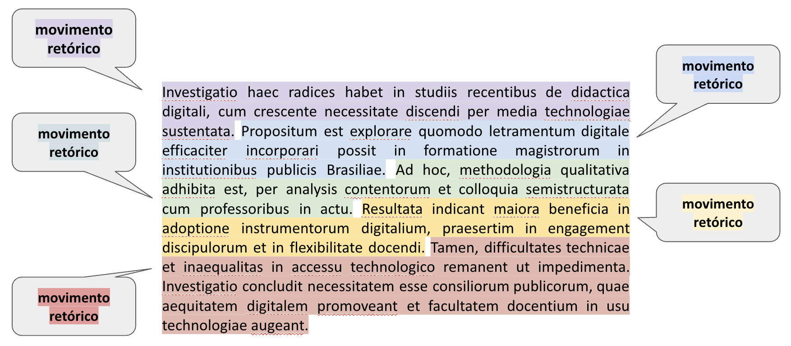
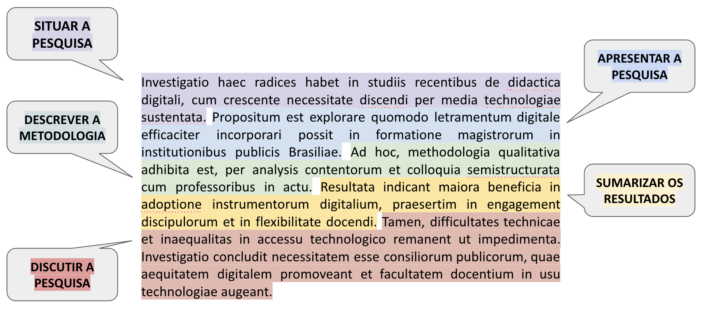

11 Resumo
Roteiro de aula elaborado no RStudio com o auxílio da inteligência artificial ChatGPT, revisado e avaliado pelo professor antes de sua publicação.
11.1 Objetivos de aprendizagem
Ao final desta aula, espera-se que você seja capaz de:
- Compreender a função do resumo no contexto acadêmico;
- Identificar os movimentos retóricos típicos do gênero resumo;
- Distinguir resumos bem estruturados de resumos que omitem movimentos essenciais;
- Aplicar os conceitos estudados na análise de resumos reais.
Leituras indicadas:
CASTRO, Nádia Studzinski Estima de et al. Leitura e escrita acadêmicas. Porto Alegre: Sagah, 2019. Capítulo: “Gêneros acadêmicos”, p. 67–72.
🔗 Acesso à leitura
MOTTA-ROTH, Désirée; HENDGES, Graciela Rabuske. Produção textual na universidade. São Paulo: Parábola, 2010. Capítulo: “Abstract/resumo acadêmico”. 🔗 Acesso à leitura
11.2 Introdução
Gêneros textuais…
- são realizações linguísticas concretas definidas por propriedades sociocomunicativas;
- constituem textos empiricamente realizados, cumprindo funções em situações comunicativas;
- a sua nomeação abrange um conjunto aberto e praticamente ilimitado de designações concretas determinadas por canal, estilo, conteúdo, composição e função.
Compreender o funcionamento dos gêneros acadêmicos exige não apenas o reconhecimento de suas funções sociocomunicativas, mas também a análise de como essas funções se concretizam linguisticamente. É nesse ponto que entra o conceito de estrutura retórica.
A partir de Swales (2004)1, pode-se definir estrutura retórica como a organização funcional de um gênero textual em movimentos retóricos recorrentes, orientados para o cumprimento de objetivos comunicativos específicos. Essa estrutura considera o contexto de produção, a audiência e as convenções disciplinares ou culturais da comunidade discursiva a que pertence o gênero.
Ainda em linha com Swales (2004), um movimento retórico é uma unidade discursiva que desempenha uma função comunicativa coerente em um discurso escrito ou oral.

Agora vamos aprofundar nosso conhecimento sobre a estrutura retórica de alguns dos gêneros textuais mais recorrentes na esfera universitária, a começar pelo resumo.
O resumo - ou abstract, em inglês - é um gênero textual que sintetiza as informações mais relevantes de um trabalho científico. Esse gênero pode ocorrer de maneira autônoma, como em resumos publicados isoladamente nos anais de eventos acadêmicos ou em bancos de dados, ou ainda integrar outras produções científicas, como artigos, relatórios técnicos, dissertações e teses, funcionando como parte estratégica do texto completo.
Como sintetizam Motta-Roth e Rabuske (2010), para que cumpra seu papel com clareza e eficácia, o resumo precisa organizar-se em movimentos retóricos específicos, que orientam o leitor quanto ao contexto da pesquisa, aos objetivos e métodos empregados, e aos principais resultados alcançados.

| Movimento | Submovimentos | Exemplo |
|---|---|---|
| 1. Situar a pesquisa | Estabelecer interesse no tópico | O ensino de Física por meio de metodologias ativas tem ganhado destaque nos últimos anos. |
| Fazer generalizações do tópico | Estudos apontam que os alunos demonstram maior engajamento quando a Física é ensinada com recursos experimentais. | |
| Citar pesquisas prévias | Pesquisas como as de Silva et al. (2021) destacam o uso de jogos didáticos no ensino de cinemática. | |
| Estender pesquisas prévias | Este estudo amplia a proposta de Moreira (2020) ao aplicar a metodologia em turmas do 2º ano. | |
| Contra-argumentar pesquisas prévias | Diferente de autores anteriores, não se investigaram os efeitos do lúdico na aprendizagem significativa. | |
| Indicar lacunas em pesquisas prévias | Ainda são escassos os estudos que avaliam o impacto do uso de simuladores virtuais em escolas públicas. | |
| 2. Apresentar a pesquisa | Indicar as principais características | Trata-se de uma investigação qualitativa com ênfase na análise de relatos de professores da rede básica. |
| Apresentar objetivo(s) | O objetivo é avaliar a eficácia de uma sequência didática baseada em experimentos de óptica. | |
| Levantar hipótese(s) | Hipotetiza-se que atividades experimentais favorecem a compreensão conceitual de fenômenos físicos. | |
| 3. Descrever a metodologia | Apresentar procedimento(s) | A metodologia envolveu aplicação de uma sequência didática com uso de simuladores PhET. |
| 4. Sumarizar os resultados | Apontar principais achados | Os resultados mostram melhora significativa no desempenho dos alunos após as intervenções. |
| 5. Discutir a pesquisa | Apresentar conclusão(ões) | Conclui-se que o uso de tecnologia digital contribui para a aprendizagem em Física. |
| Recomendar aplicação(ões) futura(s) | Sugere-se replicar o estudo em outras redes de ensino com diferentes perfis de estudantes. | |
| a Fonte: Adaptado de Motta-Roth e Rabuske (2010) com exemplos elaborados pelo professor. |
11.3 Aprendizagem prática
Veja a Atividade de pesquisa: movimentos retóricos do resumo
11.4 Atividade complementar: Registro dos artigos selecionados no Padlet
🎯 Objetivo
Consolidar a pesquisa bibliográfica por meio do registro dos dois primeiros artigos científicos selecionados, com foco no tema de pesquisa individual.
11.5 🧩 Instruções para preenchimento do Padlet
Acesse o Padlet da turma e edite os campos conforme a orientação abaixo:
11.5.1 🟪 Coluna Autor
Digite seu nome completo.
11.5.2 🟪 Coluna Assunto
Informe o tema de sua pesquisa, de forma clara e delimitada.
Exemplo:
> Gamificação e aprendizagem de Física no Ensino Médio
11.5.3 🟪 Coluna Anexo
Adicione os dois arquivos PDF dos artigos já selecionados até o momento:
💡 Nomeie os arquivos com o sobrenome do primeiro autor e o ano, como: Silva_2022.pdf ou Ferreira_2021.pdf.
11.5.4 🟪 Coluna Corpo
Cole as referências completas dos dois artigos, formatadas de acordo com as normas da ABNT (usando o Zotero).
11.6 📝 Recomendações
- Utilize o Zotero para gerar as referências automaticamente em formato ABNT;
- Certifique-se de que os artigos selecionados estejam de acordo com os critérios da atividade anterior (Qualis A1 a A4, peer-reviewed, em acesso aberto);
- Publique sua contribuição até às 17 horas da sexta-feira, dia 6 de junho.
- Estude os artigos!
SWALES, J. M. Research Genres Explorations and Applications. Cambridge: Cambridge University Press, 2004.↩︎